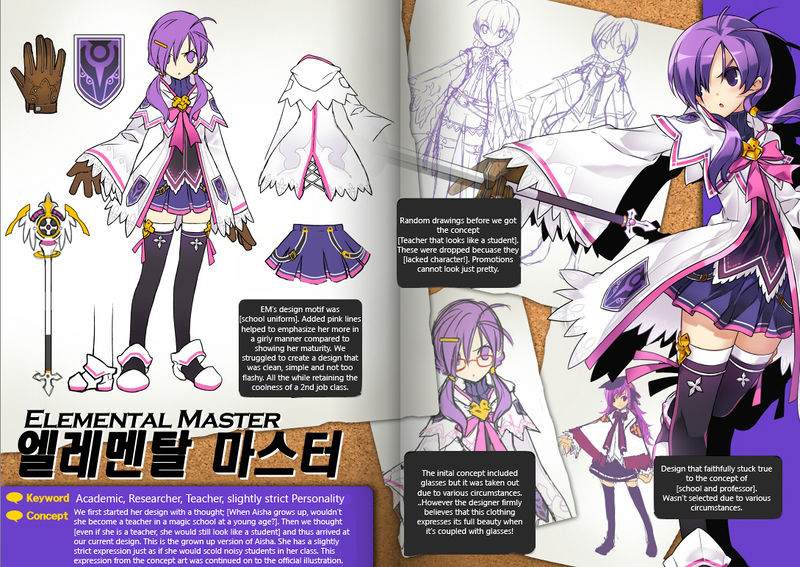

Rowspam and colspam |
|||||
Elemental Master |
|||||
| La Maestra de los elementos continúa en el camino de los cuatro elementos. Aprende técnicas que tienen rasgos únicos, que provocan más estados dañinos y mayores ataques de área para reforzar sus habilidades con el fin de exterminar grandes grupos de enemigos. Ahora sus auras intensificadores la permitan además debilitar a los enemigos. Si se usa una estrategia distinta de la ofensiva, la Maestra de los elementos puede protegerse de los enemigos que vengan o de los proyectiles con la ayuda de su Guardián heroico. |  | ||||
| Siguiendo los pasos de su mentor, Aisha intenta mejorar su magia aún más, consiguiendo manipular los cuatro elementos a su gusto. Obteniendo nuevos poderes descubiertos de los elementos de la naturaleza, Aisha es capaz de cambiar el curso del campo de batalla a su favor, lo que la convierte en la Maestra de los elementos. | |||||
|
|
|||||